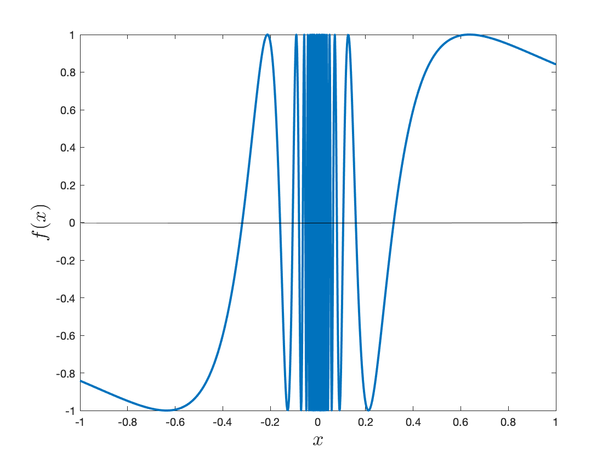

Infer the value of a limit based on nearby values of the function.
Subsection1.2.1Activities
Activity1.2.1.
Table7.
\(x\)
\(6.9\)
\(6.99\)
\(6.999\)
\(7\)
\(7.001\)
\(7.01\)
\(7.1\)
\(f(x)\)
\(0.1695\)
\(0.1699\)
\(0.1667\)
\(\unknown\)
\(0.1667\)
\(0.1664\)
\(0.1639\)
Based on the values of Table 7, what is the best approximation for \(\lim_{x\to 7} f(x)\text{?}\)
the limit is approximately 7
the limit is approximately 0.17
the limit is approximately 0.16
the limit is approximately 0.1667
the limit is approximately 6.9999
Remark1.2.2.
Notice that the value we obtained in Activity 1.2.1 is only an approximation, based on the trends that we have seen within the table.
Activity1.2.3.
Table8.
\(x\)
\(1.25\)
\(1.5\)
\(1.75\)
\(2\)
\(2.25\)
\(2.5\)
\(2.75\)
\(f(x)\)
\(-0.7606\)
\(-0.13\)
\(0.4881\)
\(\unknown\)
\(1.3119\)
\(1.33\)
\(0.9606\)
In Activity 1.1.1's Figure 1 we found an approximation to the limit of the function as \(x\) tends to 2. Now let us say you are also given a table of numerical values (Table 8) for the function. Given this new information which of the choices below best describes the limit of the function as \(x\) tends to 2?
There is not enough information because we do not know the value of the function at \(x = 2\text{.}\)
The limit can be approximated to be 1 because the data in the table and the graph show that from the left and the right the function approaches 1 as \(x\) goes to 2.
The limit can be approximated to be 1 because the values appear to approach 1 and the graph appears to approach 1, but we should zoom in on the graph to be sure.
The limit cannot be approximated because the function might not exist at \(x = 2\text{.}\)
Activity1.2.4.
Table9.
\(x\)
\(0.9\)
\(0.99\)
\(0.999\)
\(1\)
\(1.001\)
\(1.01\)
\(1.1\)
\(f(x)\)
\(-0.4\)
\(-0.49\)
\(-0.499\)
\(\unknown\)
\(0.499\)
\(0.49\)
\(0.4\)
Based on Table 9, what information can be inferred about \(\displaystyle \lim_{x\to 1^-}f(x)\text{,}\)\(\displaystyle \lim_{x\to 1^+}f(x)\text{,}\) and \(\displaystyle \lim_{x\to 1}f(x)\text{?}\)
Consider the following function \(f(x)= 3x^3 + 2x^2- 5x+20.\)
(a)
Of the following options, at which values given would you evaluate \(f(x)\) to best determine \(\displaystyle \lim_{x \to 2}f(x)\) numerically?
1.9, 1.99, 2.0, 2.01, 2.1
1.98, 1.99, 2.0, 2.01, 2.02
1.8, 1.9, 2.0, 2.1, 2.2
1.0, 1.5, 2.0, 2.5, 3.0
(b)
Use the values that you chose in part (a) to calculate an approximation for \(\lim_{x \to 2}f(x)\text{.}\)
(c)
Which value best describes the limit that you obtained in part (b)?
The approximate value is 41.25
The approximate value is 41.5
The approximate value is 41.75
The approximate value is 42
Activity1.2.6.
In Figure 10 is the graph for \(f(x) = \sin\left(\frac{1}{x}\right)\text{.}\) Several values for \(f(x)\) in the neighborhood of \(x = 0\) are approximated in Table 11.

Figure10.Graph of \(f(x) = \sin(1/x)\text{.}\)
Table11.
\(x\)
\(-0.1\)
\(-0.01\)
\(-0.001\)
\(0\)
\(0.001\)
\(0.01\)
\(0.1\)
\(f(x)\)
\(0.54402\)
\(0.50637\)
\(-0.82688\)
\(\unknown\)
\(0.82688\)
\(-0.50637\)
\(-0.54402\)
(a)
Based on the graph and table what is the best explanation for the limit as \(x\) tends to zero?
The limit does not exist because the left and right limits have opposite values.
The limit does not exist because we do not have enough information to answer the question.
The limit does not exist because the function is oscillating between -1 and 1.
The limit does not exist because you are dividing by zero when \(x = 0\) for \(f(x).\)
(b)
Would your conclusion that resulted from Activity 1.2.6 change if the function was \(f(x) = \cos(1/x)\) or \(f(x) = \tan(1/x)\text{?}\)
Activity1.2.7.
Use technology to complete the following table of values.
\begin{equation*}
f(x)=\frac{ x^{2} - x - 12 }{ x^{2} + 16 \, x + 39 }
\end{equation*}
In this activity you will study the velocity of Usain Bolt in his Beijing 100 meters dash. He completed 100 meters in 9.69 seconds for an overall average speed of 100/9.69 = 10.32 meters per second (about 23 miles per hour). But this is the average velocity on the whole interval. How fast was he at different instances? What was his maximum velocity? Let's explore this. The table Table 12 shows his split times recorded every 10 meters.
Table12.
\(t\, \text{(seconds)} \)
\(1.85\)
\(2.87\)
\(3.78\)
\(4.65\)
\(5.5\)
\(6.32\)
\(7.14\)
\(7.96\)
\(8.79\)
\(9.69\)
\(d \, \text{(meters)} \)
\(10\)
\(20\)
\(30\)
\(40\)
\(50\)
\(60\)
\(70\)
\(80\)
\(90\)
\(100\)
(a)
What was the average velocity on the first 50 meters? On the second 50 meters?
(b)
What was the average velocity between 30 and 50 meters? Between 50 and 70 meters?
(c)
What was the average velocity between 40 and 50 meters? Between 50 and 60 meters?
(d)
What is your best estimate for the Usain's velocity at the instant when he passed the 50 meters mark? This is your estimate for the instantaneous velocity.
(e)
Using the table of values, explain why 50 meters is NOT the best guess for when the instantaneous velocity was the largest. What other point would be more reasonable?